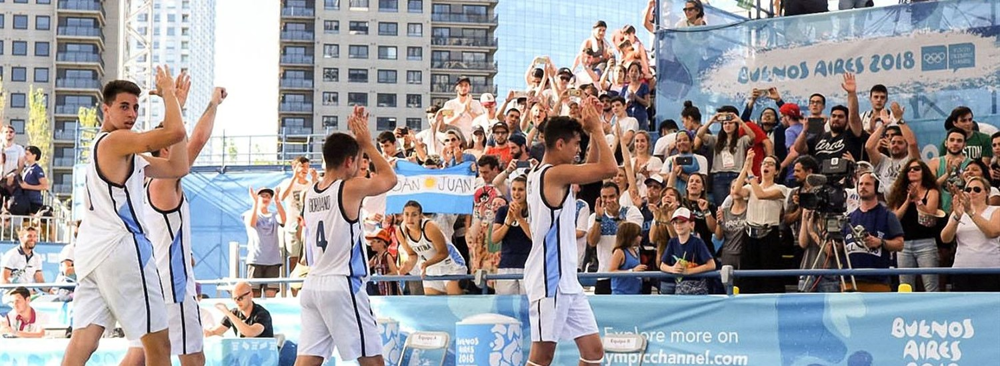

El baloncesto 3x3 es un deporte emocionante e innovador. Se desarrolló a partir del baloncesto de la calle, y está considerado como el número uno entre los deportes de equipo urbanos.
En 2007 la Federación Internacional de Baloncesto (FIBA) adaptó de manera oficial las normas universales al baloncesto 3x3 de cara a su debut en los Juegos Olímpicos de la Juventud (YOG, Youth Olympic Games), en Singapur 2010.
Se juega en la mitad de un campo normal de baloncesto de cinco jugadores, y cada equipo debe de lanzar a la misma canasta. Los conjuntos están formados por cuatro jugadores: tres en la pista y un sustituto. Con un lanzamiento de moneda se determina qué equipo empieza el partido atacando. La línea de tres puntos en el baloncesto convencional sirve como la línea de dos puntos en el baloncesto 3x3.
Las canastas anotadas desde fuera de la línea cuentan dos puntos, mientras que las de dentro suman un punto (los tiros libres también suponen un punto, si la falta se comete dentro del semicírculo). El ganador es el equipo con un marcador mayor al final del periodo de 10 minutos, o el primero en alcanzar los 21 puntos. Si el marcador está empatado después de 10 minutos, el partido va a un tiempo extra, en el que consigue el triunfo quien anote antes dos puntos.
-Jugadores 3×3 tienen características físicas y requerimientos fisiológicos similares pero diferentes al baloncesto 5X5.
-Jugadores 3×3 tienden a ser más bajos y pesados con características que se asemejan más a los aleros del baloncesto 5X5.
-A nivel aeróbico, la capacidad de los jugadores 3X3 es mucho menor (25-50% menos)
-A pesar de que recorren menos distancia, la respuesta de FC como porcentaje del máximo es alto y similar al 5X5, debido a la gran intensidad de la mayoría de acciones.
-Aceleraciones y desaceleraciones son especificas al sexo, teniendo las mujeres menor número en volumen y velocidad.
-La intensidad relativa es el doble que el baloncesto tradicional, puesto que al competir en un espacio cerrado la intensidad relativa de movimiento es mayor.